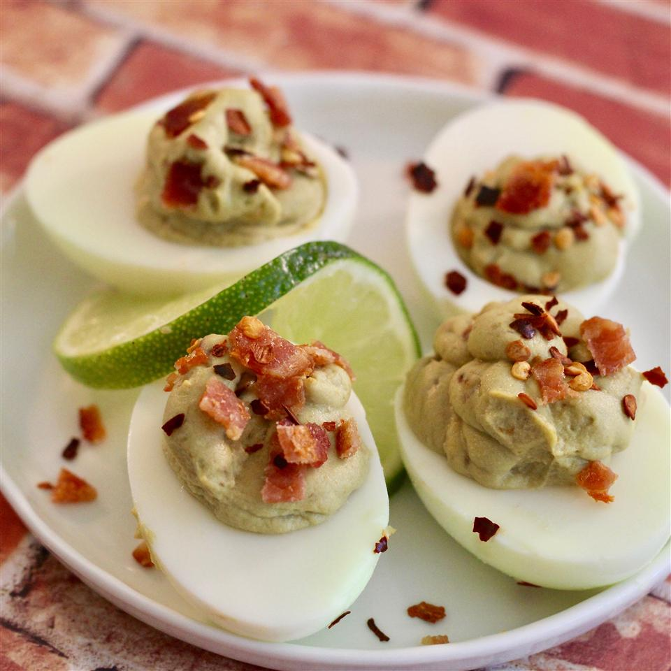

Avocado and Bacon-Stuffed Eggs

Avocado, bacon, and eggs are such a great combination! This is a quick and easy way to take deviled eggs to a new level!
I won't make them without avocado! It adds so much taste and texture.
Ingredients
- 4 slices bacon (or smoked bacon), trimmed of fat and cut into small pieces
- 1 avocado, halved and pitted
- 6 hard-boiled eggs, halved
- 1 tablespoon mayonnaise
- 2 teaspoons prepared yellow mustard
- 1 splash lime juice
- 1 pinch red pepper flakes
Step by step
- Place bacon in a large skillet and cook over medium-high heat, turning occasionally,
until evenly browned, about 5 minutes. Drain on paper towels.
- Mash avocado in a large bowl with a fork. Mix in bacon, yolks from the hard-boiled eggs,
mayonnaise, mustard, and lime juice.
- Spoon avocado mixture into the egg whites. Garnish eggs with red pepper flakes. Chill until ready to serve.